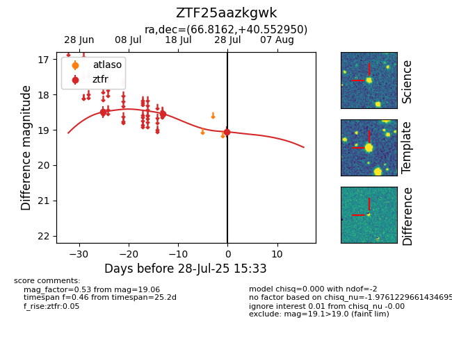

Target ZTF25aazkgwk at 2025-07-28 15:33, see:
FINK: fink-portal.org/ZTF25aazkgwk
Lasair: lasair-ztf.lsst.ac.uk/objects/ZTF25aazkgwk
ALeRCE: alerce.online/object/ZTF25aazkgwk
alt names
ZTF25aazkgwk (ztf,fink)
coordinates:
equatorial (ra, dec) = (66.8162,+40.55295)
galactic (l, b) = (161.0688,-5.82129)
photometry
last ztfr=19.06
3 ztfr detections
